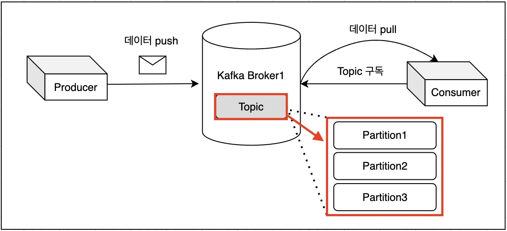
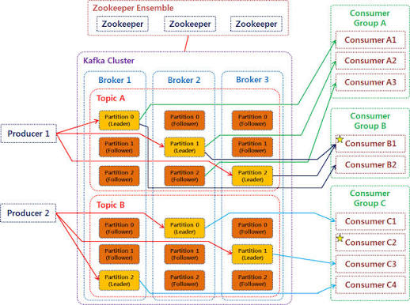

Kafka란 무엇인가: Event Streaming과 핵심 개념
목표: Kafka를 "이벤트를 저장하는 분산 로그"라는 하나의 그림으로 이해하고, Broker, Topic, Partition, Producer, Consumer, Replication이라는 용어가 그 그림의 어디에 있는 무엇인지 말할 수 있게 된다. 당신은 이미 Redis Streams의 Consumer Group을 다뤄봤다 — 그 경험을 계속 발판으로 쓴다.
0. 출발점 — Redis Streams는 되는데, 왜 Kafka인가
Redis Streams로도 Consumer Group, PEL, XACK, XAUTOCLAIM까지 다룰 수 있다는 걸 이미 안다. 그런데 Redis Streams는 한 Redis 인스턴스(또는 그 replica들) 안의 이야기다. 데이터가 많아지고, Consumer가 늘어나고, "메시지를 몇 달간 보관하고 재처리하고 싶다"는 요구가 생기면 한 대의 메모리·디스크로는 한계에 부딫힌다.
Redis Streams 한계가 드러나는 지점:
"메시지를 몇 주~몇 달치 보관하고 싶다" → 메모리 기반이라 비용이 커진다
"Consumer가 수백 대로 늘어난다" → 하나의 Stream, 분산 저장이 안 된다
"여러 서버에 걸쳐 처리량을 나누고 싶다" → Stream 자체가 partition되지 않는다
"장애가 나도 데이터를 절대 잃으면 안 된다" → 복제·durability 보장이 더 강해야 한다
→ 이 지점에서 등장하는 것이 Apache Kafka다.
Kafka는 "이벤트를 저장하는 로그"라는 같은 아이디어를,
여러 서버(Broker)에 분산시켜 애초에 이 한계를 없앤 시스템이다.이 레슨에서 가장 중요한 한 문장: Kafka의 Topic은 "파일시스템의 폴더", 그 안의 이벤트는 "파일"에 가깝다. Redis Streams의 Stream 하나가 폴더 하나라면, Kafka의 Topic은 여러 조각(Partition)으로 쪼개져 여러 서버에 흩어져 저장되는 폴더다. 이 "쪼개서 흩어놓기"가 Kafka의 스케일과 내결함성의 근원이다.
1. Event Streaming이란 무엇인가
Apache Kafka 공식 문서는 event streaming을 다음 네 단계의 지속적인 practice로 정의한다 (Apache Kafka: Introduction).
① Capture
database, sensor, mobile device, application 같은 source에서 event를 실시간으로 포착한다.
② Store
나중에 다시 꺼내볼 수 있도록 event stream을 durable하게 저장한다.
③ Process
실시간(real-time)으로도, 지나간 데이터를 다시(retrospective)도 event를 처리·반응한다.
④ Route
필요하면 event stream을 다른 목적지 시스템으로 흘려보낸다.
한 줄로 압축하면: "적절한 정보가 적절한 장소에 적절한 시간에 있도록" 데이터의 연속적인 흐름을 보장하는 것이 event streaming이다. 결제 처리, 차량 위치 추적, IoT 센서 데이터, 주문 이벤트, 병원 환자 모니터링 등이 대표적인 적용 분야다 — 다음 레슨에서 더 자세히 다룬다.
2. Kafka는 이 세 가지를 하나로 결합한다
Apache Kafka는 event streaming platform이다. 이 말은 세 가지 핵심 capability를 하나의 battle-tested 솔루션으로 묶었다는 뜻이다.
| Capability | 의미 |
|---|---|
| Publish / Subscribe | 다른 시스템에서 데이터를 지속적으로 import/export하는 것을 포함해, event stream을 쓰고(publish) 읽는다(subscribe). |
| Store | 원하는 기간 동안 event stream을 durable하고 reliable하게 저장한다. Redis Streams와 달리 "다 읽으면 지운다"가 기본 동작이 아니다. |
| Process | event가 발생하는 그 순간 처리할 수도, 나중에 다시 꺼내 처리할 수도 있다. |
그리고 이 모든 기능이 distributed, highly scalable, elastic, fault-tolerant, secure한 방식으로 제공된다. bare-metal, VM, container, on-prem, cloud 어디든 배포할 수 있다.
3. Kafka의 뼈대 — Server와 Client
Kafka는 high-performance TCP network protocol로 통신하는 Server와 Client로 구성된 distributed system이다.
핵심: Producer와 Consumer는 서로를 전혀 모른다. 둘 다 오직 Kafka Cluster(Broker들)와만 이야기한다. 이것이 Redis Streams의 Producer/Consumer 관계와 개념적으로 같다 — 다만 Broker가 여러 대로 분산된다는 점이 다르다.

Producer는 push(write), Consumer는 pull(read + topic 구독) — 그리고 Broker 안의 Topic 하나가 실제로는 여러 Partition으로 쪼개져 저장된다는 것을 그대로 보여주는 그림이다.
자주 나오는 질문 — "여러 대의 Broker, 그럼 이걸 관리하는 별도 서버가 있어야 하지 않나?"
정확한 직감이다. 있다. "지금 몇 대가 살아있는지, 어느 Partition이 어느 Broker에 있는지, 누가 Leader인지" 같은 정보(metadata)를 누군가는 따로 관리해야 한다. Kafka에서 이 역할을 Controller가 한다.
중요한 것: Controller는 Broker와 동떨어진 완전히 새로운 종류의 서버가 아니다. 최신 Kafka에서는 Controller 역할도 Kafka 프로세스 자체가 수행한다(그리고 장애에 대비해 Controller도 3대 정도로 이중화된다). 예전에는 이 역할을 ZooKeeper라는 완전히 별도의 시스템에 맡겼었다 — "별도 서버가 있어야 하지 않나?"라는 직감이 맞아서, 실제로 예전엔 정말 별도 시스템(ZooKeeper)이 있었다. 이 부분은 다음 다음 레슨에서 왜, 어떻게 바뀌었는지 자세히 다룬다. 지금은 "Broker들을 감독하는 역할이 어딘가에 반드시 있다"는 사실만 기억해두면 충분하다.
4. Event, Topic, Partition — 데이터의 모양
Event(= record, message)는 "무언가 일어났다"는 사실을 기록한다. key, value, timestamp, 선택적 metadata header로 구성된다.
example event:
Event key: "Alice"
Event value: "Made a payment of $200 to Bob"
Event timestamp: "Jun. 25, 2020 at 2:06 p.m."Producer는 event를 publish(write)하는 client, Consumer는 event를 subscribe(read)하는 client다. Kafka에서 이 둘은 완전히 decoupled되어 있다 — producer는 consumer를 기다리지 않는다.
제일 쉬운 비유: Topic = 카카오톡 단체 채팅방, Event = 그 방에 올라온 메시지 한 개. "orders"라는 이름의 채팅방이 있고, 거기 "주문 1번 생성", "주문 2번 생성", "주문 1번 취소" 같은 메시지가 하나씩 올라온다고 생각하면 된다. 그 메시지 하나하나가 Event이고, 그 메시지들이 모여 있는 방 자체가 Topic이다. 그 이상의 뜻은 없다.
Event는 Topic이라는 이름의 그릇에 담겨 저장된다. 조금 더 기술적으로 말하면 Topic은 파일시스템의 폴더와 비슷하고 event는 그 폴더 안의 파일이다 — 위 채팅방 비유와 같은 말을 다르게 표현한 것뿐이다. Topic은 항상 multi-producer, multi-subscriber다 — 여러 사람(서비스)이 이 방에 메시지를 보낼 수 있고(producer), 여러 사람(서비스)이 이 방을 동시에 읽을 수 있다(subscriber).
multi-producer, multi-subscriber를 이 예로 다시 보면: "orders" Topic 하나에 주문 서비스, 결제 서비스가 동시에 event를 쓸 수 있고(multi-producer), 재고 서비스, 배송 서비스, 통계 서비스가 동시에 그 event들을 읽을 수 있다(multi-subscriber). 각 subscriber는 서로의 존재를 몰라도 되고, 각자 자기 속도로 읽는다.
Redis Streams와 결정적으로 다른 점: 전통적인 메시징 시스템이나 Redis Streams의 XACK 이후처럼 "읽으면 사라진다"가 아니다. Kafka의 event는 consumption 후에도 삭제되지 않는다. per-topic 설정(retention)으로 "얼마나 오래 보관할지"만 정한다. Kafka 성능은 저장된 데이터 크기와 거의 무관하므로, 오래 보관해도 성능 문제가 없다.
5. Partition — Topic이 스케일하는 방법
비유: Broker = 창고, Partition = 상자. Topic 하나를 여러 상자(Partition)로 쪼개서, 그 상자들을 여러 창고(Broker)에 나눠 넣는 것이 Partition의 역할이다. 상자로 쪼개지 않으면 창고가 아무리 많아도 그 Topic의 데이터는 상자 하나에 담긴 채 창고 하나에만 머무른다.
Topic은 partition된다. 즉 여러 개의 "bucket"으로 쪼개져 서로 다른 Broker에 분산 배치된다. 이 분산 배치 덕분에 client가 동시에 여러 Broker에서 읽고 쓸 수 있다 — 이것이 스케일의 핵심이다.
자주 나오는 질문 — "Broker마다 정해진 개수로 Partition을 나눈다는 뜻인가?"
아니다. Partition은 Broker가 아니라 Topic에 속한 것이다. "이 Topic을 몇 조각으로 나눌지"를 Topic마다 따로 정하고, 그 조각들이 여러 Broker에 흩어져 들어간다. 그리고 Broker 한 대는 여러 Topic에서 온 여러 Partition을 동시에 담을 수 있다. "Broker 하나 = Partition 3개" 같은 고정 규칙은 없다.
Partition이 여러 Topic을 담당하는 게 아니다 — 방향이 반대다.
Partition 하나(예: orders-0)는 딱 하나의 Topic(orders)에만 속한다.
다만 한 Broker(창고)는 orders의 상자도, payments의 상자도 동시에 보관할 수 있다는 뜻이다.
새 event가 Topic에 publish되면 실제로는 Partition 중 하나에 append된다. 같은 key를 가진 event(위 그림에서 같은 색)는 항상 같은 Partition에 쓰인다. 그리고 Kafka는 하나의 topic-partition 안에서 write된 순서 그대로 read됨을 보장한다 — 순서 보장은 Partition 단위이지 Topic 전체 단위가 아니라는 점이 자주 놓치는 포인트다.
두 producer가 같은 partition에 동시에 쓸 수도 있다(위 그림 예시처럼). Partition 개수를 정하는 것은 "동시에 얼마나 많은 client가 병렬로 읽고 쓸 수 있는가"를 정하는 것과 같다.
자주 나오는 질문 — "이벤트가 발행되면 어느 Broker의 어느 Partition으로 가는지, 그 연결은 어떻게 정해지나?"
실제로 벌어지는 순서를 그대로 따라가보자. orders 토픽에 이벤트를 하나 보낸다고 하자.
① Producer: "orders 토픽에, key='order-1'로 이 이벤트를 보낸다"
→ 아직 Broker와는 얘기 안 함. Topic 이름과 key만 정한 상태.
② Producer 라이브러리가 어느 Partition인지 먼저 계산한다
→ key가 있으면: hash(key) % Partition개수 → 예: orders-0으로 결정
→ key가 없으면: 순서대로 돌아가며 배정(round-robin)
③ "orders-0은 지금 어느 Broker에 있지?"를 metadata에서 조회한다
→ 이 metadata(어느 Partition이 어느 Broker의 Leader인가)는
Controller가 관리하고, 모든 Broker가 이미 알고 있다
④ Producer가 그 Broker에 직접 TCP로 접속해 이벤트를 보낸다
→ 예: "orders-0의 Leader는 Broker 2다" → Broker 2에 바로 전송
⑤ Broker 2가 디스크의 orders-0 파일에 append하고,
replication factor만큼 다른 Broker(Follower)에 복사한다핵심: Partition 번호를 먼저 계산하고, 그 다음 "그 번호가 지금 어느 Broker에 있는지"를 찾아서 그 Broker에만 이벤트를 보낸다. 모든 Broker에 뿌리는 게 아니다. Consumer가 읽을 때도 똑같다 — "이 Partition은 어느 Broker에 있지?"를 먼저 확인하고 그 Broker에 직접 요청한다.
6. Replication — 장애에 견디는 방법
비유: 일기장을 사진 찍어 다른 서랍에도 보관해두는 것. 원본 일기장(Leader)이 불타 없어져도 사진(Follower 복사본)이 있으면 내용을 그대로 살릴 수 있다. Kafka에서 "복제한다"는 것은 정확히 한 Partition 안에 쌓인 Event들 전체를 다른 Broker에도 토씨 하나 안 틀리고 하나 더 저장해두는 것이다.
data를 fault-tolerant하고 highly-available하게 만들기 위해 모든 Topic은 replicate될 수 있다. 이 replication은 topic-partition 단위로 수행된다 — 기본은 같은 클러스터 안의 다른 Broker에 복사해두는 것이고, 재해 대비를 위해 아예 다른 datacenter나 geo-region까지 복사 범위를 넓히는 것도 가능하다(지금은 "그런 옵션도 있다" 정도만 알아두면 된다).
일반적인 production 설정: replication factor = 3
Partition 0 (Broker 1: Leader) ──copy──▶ Broker 2 (Follower)
└──copy──▶ Broker 3 (Follower)
→ 항상 데이터 복사본 3개가 서로 다른 Broker에 존재한다.
→ Broker 1이 죽으면 Follower 중 하나가 새 Leader가 되어
data loss 없이 서비스가 계속된다.자주 나오는 질문 — "복사본은 어디에 어떻게 저장되나? 별도 관계형 DB나 시계열 DB에 넣는 건가?"
아니다. Kafka는 외부 DB를 전혀 쓰지 않는다. RDBMS도, 시계열 DB도 아니고, Kafka 자신이 직접 구현한 파일 기반의 append-only 로그(Commit Log) 저장 엔진을 쓴다.
Partition 하나 = Broker 로컬 디스크의 폴더 하나이고, 그 안에 이벤트가 순서대로 쌓인 로그 파일들이 있을 뿐이다.
/kafka-logs/orders-0/
00000000000000000000.log ← 실제 이벤트 데이터 (append-only)
00000000000000000000.index ← offset → 파일 내 위치를 찾는 색인
00000000000000000000.timeindex ← timestamp → offset을 찾는 색인
00000000000000012000.log ← 일정 크기를 넘으면 새 segment 파일로 분리
...이벤트가 들어오면 이 로그 파일 맨 뒤에 순서대로 이어붙이기(append)만 한다. DB처럼 인덱스 트리를 재구성하거나 row를 update/delete하는 과정이 없다 — 오직 append이기 때문에 쓰기 성능이 매우 빠르고, 저장된 데이터가 많아져도 쓰기 속도가 거의 떨어지지 않는다 (앞서 나온 "Kafka 성능은 저장 데이터 크기와 거의 무관하다"는 말이 이 구조에서 나온다).
Replication도 결국 "Follower가 Leader를 pull하는 것"으로 이루어진다 — Follower는 사실상 Leader에 대한 특수한 Consumer처럼 동작한다.
① Leader의 log 파일에 새 이벤트가 append됨
② Follower가 "나 지금 offset 1000까지 읽었는데, 그 뒤에 새 거 있어?"라고 Leader에 계속 요청(pull)
③ Leader가 새로 쌓인 바이트를 그대로 넘겨줌
④ Follower가 그 바이트를 자기 로컬 디스크의 같은 위치에 그대로 append그 결과 Follower의 로그 파일은 Leader의 로그 파일과 바이트 단위로 완전히 동일한 복사본이 된다. 별도의 DB에 구조화해서 저장하는 게 아니라 파일 자체를 그대로 복제한다고 보면 된다. 이 레슨 맨 처음에 나온 "Topic은 폴더, Event는 파일"이라는 비유가 여기서는 비유가 아니라 실제 구현 방식 그 자체다.
자주 나오는 질문 — "Broker를 1개만 두는 건 오버엔지니어링인가?"
질문을 뒤집는 게 정확하다: Broker 1개는 오버엔지니어링이 아니라, 오히려 "Kafka를 왜 쓰는지"에 해당하는 이유(스케일, 무중단)를 스스로 포기하는 구성이다. 상황에 따라 맞기도, 틀리기도 하다.
| 상황 | Broker 1개 | 왜 |
|---|---|---|
| 학습·로컬 개발·PoC | 적절함 | 개념 확인, API 연습이 목적. 장애 대비·처리량이 아직 중요하지 않다. |
| 단일 서버로도 충분히 처리 가능한 소규모 서비스 | 쓸 수는 있음 | 다만 replication factor를 2 이상으로 못 만든다(복사본을 놓을 다른 Broker가 없음). 그 Broker가 죽으면 data loss 가능성이 생긴다 — Kafka의 핵심 강점(내결함성)을 쓰지 못하는 것. |
| 실무 도입(당신의 상황) | 부적절 | 운영 환경에서 Broker 1대는 단일 장애점(SPOF)이다. 일반적인 production 최소 구성은 Broker 3대 + replication factor 3이다. |
반대 방향의 오해도 조심하자: "Broker를 무조건 많이 둘수록 좋다"도 아니다. Broker가 늘어나면 관리·네트워크 비용도 늘어난다. "필요한 처리량과 감당 가능한 장애 범위"에 맞춰 대수를 정하는 것이지, 무조건 많을수록 좋은 게 아니다. 실무 표준값(3대, replication 3)에서 시작해 트래픽에 맞춰 늘려가는 것이 일반적인 접근이다.
7. Kafka의 5가지 핵심 API
| API | 역할 |
|---|---|
| Admin API | Topic, Broker 등 Kafka object를 관리·조회. |
| Producer API | 하나 이상의 Topic에 event stream을 publish(write). |
| Consumer API | 하나 이상의 Topic을 subscribe(read)하고 event를 처리. |
| Kafka Streams API | transformation, aggregation, join, windowing 등 stateful 처리를 지원하는 stream processing library. input topic을 읽어 output topic으로 변환. |
| Kafka Connect API | 외부 시스템(예: PostgreSQL)과 event를 continuous하게 import/export하는 재사용 가능한 connector를 build/run. 대부분 이미 만들어진 connector를 쓴다. |
8. 지금까지 배운 개념을 Redis Streams와 매핑하기
이미 아는 것에 붙이면 훨씬 빨리 붙는다. 왼쪽은 이미 아는 Redis Streams, 오른쪽이 Kafka다.
| Redis Streams | Kafka | 달라지는 핵심 |
|---|---|---|
Stream 하나 (jobs:ai) |
Topic 하나 | Topic은 Partition으로 쪼개져 여러 Broker에 분산 저장된다. Stream은 한 곳에 있다. |
| 단일 Redis 인스턴스(+replica) | Broker 여러 대로 구성된 Cluster | 애초에 여러 서버로 스케일하도록 설계됐다. |
| Consumer Group + PEL + XACK | Consumer Group + Offset commit | 개념은 같다(그룹 내 분배, 진행 위치 추적). 세부 메커니즘은 이후 레슨에서 다룬다. |
| XACK 안 하면 PEL에 남음 | Consumer가 읽어도 event는 삭제되지 않음 | Kafka는 retention 기간 동안 항상 다시 읽을(replay) 수 있다. "소비 완료 = 삭제"가 아니다. |
| replica 1~2개(수동 구성 다양) | Partition당 Replication factor(보통 3) | replication이 partition 단위로 촘촘하게 관리된다. |
자주 나오는 질문 — "결국 Kafka도 Redis Streams처럼 Pull + Consumer Group인데, 뭐가 다른가?"
먼저 오해부터 바로잡자: Kafka에도 Consumer Group이 있다. 오히려 Redis Streams의 Consumer Group이 Kafka 쪽 개념을 본떠 만든 것이다. 두 시스템 다 Consumer Group = "이 Topic/Stream을 여러 worker(Consumer)가 나눠서, 각 event를 그룹 전체 기준으로 딱 한 번만 처리하자"는 같은 목적을 갖는다. 아래 그림의 Consumer A·B는 둘 다 같은 Consumer Group에 속한 worker들이다.
두 시스템 다 Consumer가 알아서 물어보고(pull), Consumer Group이 진행 위치를 추적한다는 점도 똑같다. 다른 것은 오직 "그룹 안에서 누구에게 무엇을 줄지 언제 정하느냐"다. Kafka Consumer Group은 Partition 단위로 미리 배정하고, Redis Streams Consumer Group은 Partition이 없으므로 메시지 하나하나를 요청 시점에 배정한다.
그리고 이 그림에서 꼭 짚을 것 — 정확히는 두 겹으로 나눠 봐야 한다.
Consumer Group의 membership·partition 배정·committed offset 같은 "상태"는
Kafka 브로커 안에 있고 Kafka가 직접 관리한다(브로커 중 한 대가 맡는
Group Coordinator가 담당하고, offset은 __consumer_offsets라는
Kafka 내부 topic에 실제로 저장된다). Kafka가 "어느 그룹이 있는지 몰라도 된다"는 게 아니라
정확히 알고 계속 추적한다는 뜻이다. 반면 그 그룹 소속으로 실제 메시지를 pull해 처리하는
Consumer "프로세스" 자체는 Producer와 같은 위치 — Kafka Cluster(Broker들) 밖에서
네가 따로 배포·실행하는 client 애플리케이션이다. Kafka(서버 쪽)를 이루는 것은
Broker와 그 안의 Partition, 그리고 Group Coordinator가 관리하는 그룹 상태이고,
Consumer 프로세스는 그 Broker에 TCP로 접속해 "나 이 그룹 멤버인데, 이 Partition 읽을게"라고
요청하는 외부 프로그램이다.
그래서 컨슈머를 늘려서 얻는 병렬성의 상한선도 다르다. Kafka는 Partition 개수가 상한선이다(Partition 4개인데 Consumer가 5명이면 1명은 놀게 된다). Redis Streams는 Partition이 없으니 이런 상한선 자체가 없고, 컨슈머를 늘리는 만큼 그때그때 메시지가 나뉘어 간다 — 대신 "몇 대의 창구가 물리적으로 나뉘어 있는가"라는 확장 단위가 없다는 뜻이기도 하다.

지금까지 손으로 그린 그림을 실제 아키텍처로 확인해보자. Kafka Cluster(파란 점선) 안에 Broker 1·2·3이 있고, 그 안에 Topic A·B의 Partition들이 Leader(주황)/Follower(빨강)로 나뉘어 저장돼 있다. 그리고 Consumer Group A·B·C는 전부 Cluster 박스 밖에 그려져 있다 — 지금까지 얘기한 "Consumer(그룹의 실행 주체)는 Kafka Cluster 밖의 client"라는 게 그림에서도 그대로 확인된다. 화살표가 각 Partition에서 특정 Consumer로 뻗어 있는 것도 "Partition을 Consumer에게 통째로 배정한다"는 것과 같은 그림이다. 왼쪽의 Zookeeper Ensemble은 Controller 역할을 예전에 전담했던 별도 시스템이다 — 다음 다음 레슨에서 다룬다.
가장 자주 넘어지는 지점: "Partition = Broker"가 아니다. 한 Broker는 여러 Topic의 여러 Partition을 동시에 가질 수 있다. "어느 Partition이 어느 Broker에 있는가"는 Kafka 내부의 metadata가 결정하며, 이 metadata를 누가, 어떻게 관리하는지는 다음 다음 레슨에서 다룬다.
9. Topic·Partition·Consumer Group 관계 총정리 (Teach Session Q&A)
지금까지 Teach Session에서 나온 질문들을 흐름대로 다시 묶었다. 하나하나가 개별 지식이 아니라 "왜 이렇게 설계됐는가"라는 하나의 이야기로 이어진다는 걸 확인하는 게 목적이다.
① Topic 하나 안에 여러 종류의 Event, 그리고 Partition이 순서를 보장하는 단위
"주문" Topic 안에 "생성", "취소" 같은 서로 다른 이벤트 종류가 함께 담기는 것 — 맞다.
Topic은 그릇, Event는 그 안에 담기는 개별 레코드일 뿐이라 "생성"이든 "취소"든 같은
orders Topic에 다 들어갈 수 있다. 보통 event의 value 안에
"type": "ORDER_CREATED" 같은 필드로 종류를 구분한다.
이 Topic의 Partition이 1개뿐이라면, 그 안에 컨슈머가 몇 명 붙든 규칙상 딱 한 명만 읽을 수 있으니 100건이 들어와도 한 컨슈머가 순서대로 하나씩 처리하게 된다 — 느리지만 "생성 다음에 취소가 먼저 처리되는 일"이 절대 없다는 강한 순서 보장을 준다.
그리고 Partition과 Consumer의 관계는 "N:1"이다(여러 Partition → Consumer 한 명은 가능, 그 반대는 불가능). Partition 9개 중 1·2·3번을 Consumer 1이 한꺼번에 맡는 것도 가능하다. 반대로 Partition 하나를 여러 Consumer가 나눠 읽는 것은 금지되어 있는데, 그 이유가 바로 위의 순서 보장이다 — 같은 Partition을 A, B가 동시에 읽으면 "취소가 생성보다 먼저 처리되는" 순서 역전이 생길 수 있어서, Kafka는 아예 "Partition 하나 = 그 순간 담당 Consumer 한 명"으로 규칙을 못박아 이 문제를 원천 차단한다.
② Partition을 여러 개로 나누는 이유 — "동시 처리"를 가능하게 만드는 전제 조건
Partition을 여러 개로 쪼개는 것은 단순히 부하가 한쪽으로 몰리는 걸 막는 정도가 아니라, 애초에 여러 명이 동시에 읽는 것 자체를 가능하게 만드는 전제 조건이다. Topic에 Partition이 딱 1개뿐이면, 그 그룹에 Consumer를 아무리 여러 명 붙여도 규칙상 한 순간에 1명만 읽을 수 있으니 병렬성은 항상 1로 고정된다. Partition을 9개로 나누면 최대 9명이 동시에(각자 다른 Partition을) 처리할 수 있다 — Partition 개수 = 이 Topic을 동시에 몇 명이 나눠 읽을 수 있는지의 물리적 상한선이다.
③ Consumer Group 안에 Consumer를 여러 명 두는 이유 — 병렬 처리(처리량 확장)
Consumer 하나가 초당 100개를 처리한다면, 같은 그룹에 3명을 붙이면 이론상 초당 300개까지 처리 가능하다 — 각자 다른 Partition을 맡아 동시에 일하기 때문이다. 그래서 실무에서 "이 Topic 처리량을 늘리자"는 요구는 거의 항상 Partition 개수와 Consumer 개수를 함께 늘리는 얘기가 된다. Partition만 늘리면 그걸 읽을 Consumer가 없어서 소용없고, Consumer만 늘리면 받아줄 Partition이 없어서 남는 Consumer는 그냥 논다(idle).
실무에서는 Consumer 개수를 Partition 개수 이하로 맞춰서 idle을 만들지 않는 게 기본이다. "혹시 몰라서" 예비 Consumer를 상시로 더 띄워두는 hot-standby 전략은 흔하지 않다 — 리밸런싱 자체가 보통 몇 초 안에 끝나기 때문에, 장애 대응은 예비 인력을 미리 놀리는 것보다 "죽으면 자동 재시작"(k8s 등 오케스트레이션)에 맡기는 것이 표준이다.
④ subscribe()는 언제 일어나나 — 컨슈머 프로세스가 뜨는 순간
Broker에 미리 등록해두는 정적 설정이 아니라, Consumer 애플리케이션이 실행되는 시점(런타임)에
코드가 subscribe(["orders"])를 호출하면서 그룹 참여(JoinGroup)가 일어난다.
애플리케이션 시작
→ Kafka Consumer 객체 생성
→ consumer.subscribe(["orders"]) ← 여기서 그룹 참여 선언(JoinGroup)
→ while(true) { consumer.poll(...) ... 처리 ... }프로세스가 죽으면 그 구독/멤버십도 같이 사라지고(하트비트 끊김 → 리밸런싱), 다시 살아나면 다시 subscribe하면서 새로 join한다.
⑤ Pull 방식 — Redis의 BLOCK과 개념적으로 같은 long-polling
Kafka의 poll()도 짧은 간격으로 계속 찔러보는 busy-loop가 아니라 long-polling이다.
fetch.min.bytes— 최소 이만큼 데이터가 쌓이기 전엔 응답 안 줘도 됨fetch.max.wait.ms— 근데 그 최소량이 안 채워져도 이 시간이 지나면 빈손이라도 응답
Consumer가 fetch 요청을 보내면 Broker는 그 요청을 쥔 채로 데이터가 쌓이거나 타임아웃될 때까지
기다린다 — 정확히 Redis XREAD BLOCK <ms>와 같은 아이디어다. 매번 헛수고로
왕복하지 않고, 커넥션 하나를 잠깐 잡아둔 채 데이터가 실제로 생길 때까지 효율적으로 기다리는 것.
⑥ Producer는 생산만, 파티션 결정은 Broker가 아니라 Producer 클라이언트가 함
"카프카 내부적으로 분배한다"기보다, Producer 라이브러리(클라이언트) 쪽에서 미리 계산한다.
① Producer가 이벤트를 보낼 때 key(선택)와 value를 넘김
② Producer 클라이언트 내부의 Partitioner가 계산:
- key가 있으면: hash(key) % Partition개수 → 파티션 번호 결정
- key가 없으면: 라운드로빈/sticky 방식으로 배분
③ 이미 계산된 그 파티션 번호를 담당하는 Broker에 직접 전송Broker는 "어느 파티션에 넣을지 고민"하지 않는다 — 이미 정해진 번호로 온 데이터를 그냥 저장할 뿐이다. 분배 판단은 Producer 쪽에서 이미 끝나 있다.
⑦ "같은 Consumer Group" = 같은 일을 나눠서 하는 여러 개의 인스턴스
Consumer Group이란 동일한 로직(같은 코드)을 실행하는 여러 인스턴스가 일을 나눠서 하는
단위다. 결제 서비스를 3대 띄웠다면 그 3대가 다 같은 group.id를 쓰고, Kafka가
그들끼리 Partition을 나눠준다.
⑧ Topic과 Consumer Group의 관계 — Topic마다 완전히 독립적
Topic 하나에 어떤 그룹이 구독하는지는 Topic마다 완전히 독립적으로 다를 수 있다.
Topic A ← Group 1, Group 2 (둘 다 구독)
Topic B ← Group 1만 (Group 1은 A와 B 둘 다 구독 중)
Topic C ← Group 3만"구독"은 Consumer(그룹) 쪽에서 "나 이 Topic 읽을래"라고 선언하는 행위이지, Topic이 자기 구독자를 미리 정해두는 게 아니라서 이런 자유로운 조합이 가능하다. 그리고 Topic A를 Group 1, 2가 함께 구독하면, 전달은 두 그룹 모두에게 각자 온전히(fan-out) 이루어지고, 처리는 각 그룹 내부에서 파티션 담당자 한 명만 한다 — "그룹 간엔 중복 전달, 그룹 내에선 분업"이라는 이중 구조다.
⑨ Partition은 Topic 단위로 나뉘고, 여러 Broker에 분산 배치된다
Partition 개수는 Topic마다 독립적으로 설정한다 — orders Topic은 9개,
payments Topic은 6개처럼 토픽별로 완전히 다르게 정할 수 있다.
그리고 Broker가 여러 대라면, 한 Topic의 Partition들은 여러 Broker에 걸쳐 분산 배치된다 (예: Broker 1에 Partition 0·1, Broker 2에 Partition 2·3). 이 배치는 Topic을 처음 만들 때 Controller가 자동으로 계산해서 Leader/Follower가 Broker들에 고르게 퍼지도록 정해준다 — 이것이 Controller가 관리하는 metadata의 실체이자, Kafka가 여러 서버로 스케일하는 핵심 메커니즘이다.
10. 회상 퀴즈
보지 말고 답해보자. 틀리는 게 오히려 기억에 남는다.
Q1. Kafka에서 Topic이 스케일하기 위해 쪼개지는 단위는?
Q2. 같은 key를 가진 event들은 어디에 기록되는가?
Q3. Kafka가 순서(order)를 보장하는 단위는?
Q4. Consumer가 event를 읽고 나면 그 event는?
Q5. replication factor 3이 의미하는 것은?
Q6. Producer와 Consumer의 관계는?
Q7. 외부 시스템(예: PostgreSQL)과 event를 주고받기 위한 API는?
공식 자료 (가장 먼저 읽을 것)
- 1순위: Apache Kafka: Introduction — 이 레슨 전체의 원본. event streaming 정의, 핵심 용어, API 5종.
- Apache Kafka Documentation: Getting Started — 로컬에 Kafka를 직접 띄워볼 때 참고.
- Confluent: What is Apache Kafka? — 입문자 관점의 비유가 많은 보충 설명.
커뮤니티 (막힐 때)
- r/apachekafka — 실무 운영 사례와 트러블슈팅 질문.
- Stack Overflow: apache-kafka 태그 — 에러 메시지로 검색하기 좋다.
관련 자료:
Kafka 핵심 개념 치트시트
(인쇄해서 옆에 두기 좋게 만들었다).
다음 레슨: Kafka를 실제로 어디에 쓰는가,
그 다음은 클러스터 metadata를 누가 관리하는가(KRaft vs ZooKeeper).
이해가 막히는 지점은 이 Teach Session에서 바로 후속 질문으로 이어가자 —
"왜 Partition 개수를 나중에 줄일 수 없나?" 같은 질문이 좋은 질문이다.